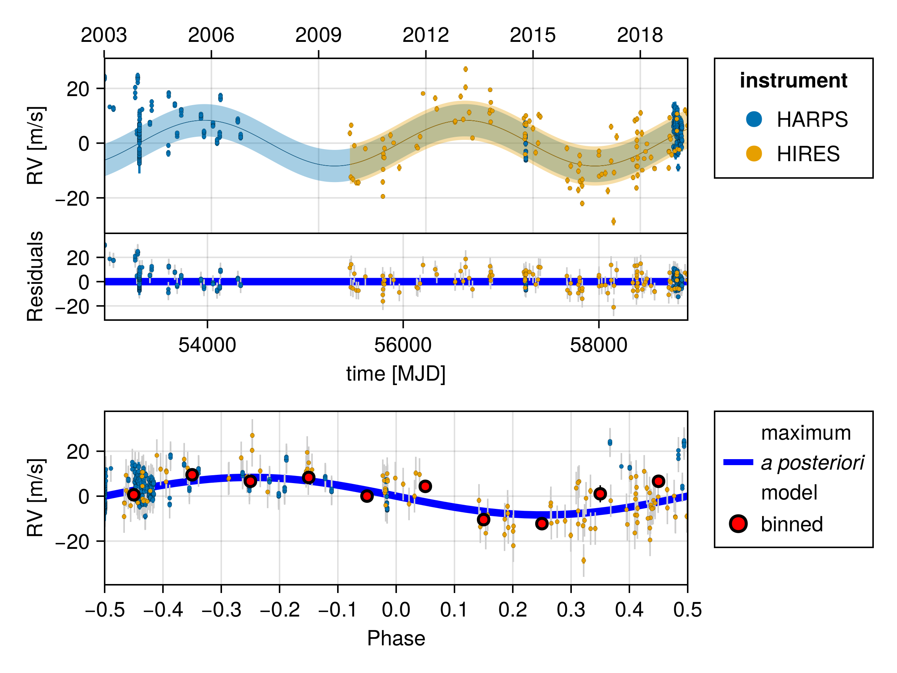
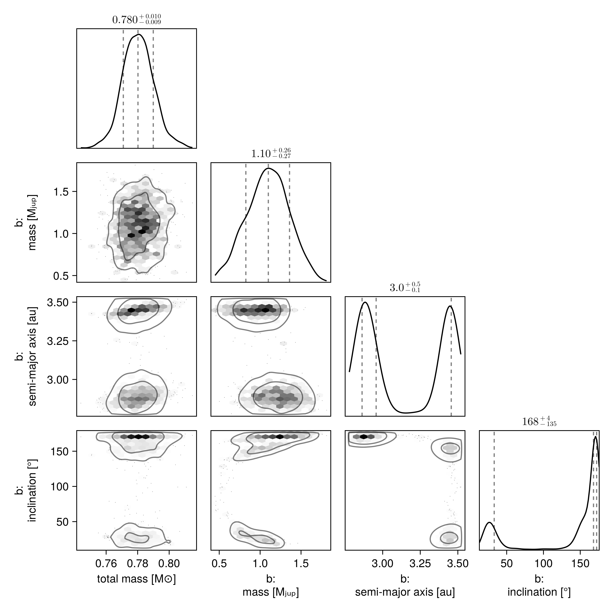

Fit RV and Astrometry
In this example, we will fit an orbit model to a combination of radial velocity and Hipparcos-GAIA proper motion anomaly for the star $\epsilon$ Eridani. We will use some of the radial velocity data collated in Mawet et al 2019.
Radial velocity modelling is supported in Octofitter via the extension package OctofitterRadialVelocity. To install it, run pkg> add OctofitterRadialVelocity
Datasets from two different radial velocity insturments are included and modelled together with separate jitters and instrumental offsets.
using Octofitter, OctofitterRadialVelocity, Distributions, PlanetOrbits, Plots
gaia_id = 5164707970261890560
@planet b Visual{KepOrbit} begin
e = 0
ω=0.0
mass ~ Uniform(0, 3)
a~Uniform(1, 5)
i~Sine()
Ω~UniformCircular()
τ ~ UniformCircular(1.0)
P = √(b.a^3/system.M)
tp = b.τ*b.P*365.25 + 58849 # reference epoch for τ. Choose an MJD date near your data.
end # No planet astrometry is included since it has not yet been directly detected
# Convert from JD to MJD
# Data tabulated from Mawet et al
jd(mjd) = mjd - 2400000.5
# # You could also specify it manually like so:
# rvs = StarAbsoluteRVLikelihood(
# (;inst_idx=1, epoch=jd(2455110.97985), rv=−6.54, σ_rv=1.30),
# (;inst_idx=1, epoch=jd(2455171.90825), rv=−3.33, σ_rv=1.09),
# ...
# )
# We will load in data from two RV
rvharps = OctofitterRadialVelocity.HARPS_RVBank_rvs("HD22049")
rvharps.table.inst_idx .= 1
rvhires = OctofitterRadialVelocity.HIRES_rvs("HD22049")
rvhires.table.inst_idx .= 2
rvs_merged = StarAbsoluteRVLikelihood(
cat(rvhires.table, rvharps.table,dims=1),
instrument_names=["HARPS", "HIRES"]
)
Plots.plot(rvs_merged)
@system ϵEri begin
M ~ truncated(Normal(0.78, 0.01),lower=0)
plx ~ gaia_plx(;gaia_id)
pmra ~ Normal(-975, 10)
pmdec ~ Normal(20, 10)
rv0_1 ~ Normal(0,10)
rv0_2 ~ Normal(0,10)
jitter_1 ~ truncated(Normal(0,10),lower=0)
jitter_2 ~ truncated(Normal(0,10),lower=0)
end HGCALikelihood(;gaia_id) rvs_merged b
# Build model
model = Octofitter.LogDensityModel(ϵEri; autodiff=:ForwardDiff, verbosity=4) # defaults are ForwardDiff, and verbosity=0LogDensityModel for System ϵEri of dimension 15 with fields .ℓπcallback and .∇ℓπcallback
Now sample:
using Random
rng = Random.Xoshiro(0)
results = octofit(rng, model)Chains MCMC chain (1000×34×1 Array{Float64, 3}):
Iterations = 1:1:1000
Number of chains = 1
Samples per chain = 1000
Wall duration = 70.54 seconds
Compute duration = 70.54 seconds
parameters = M, plx, pmra, pmdec, rv0_1, rv0_2, jitter_1, jitter_2, b_mass, b_a, b_i, b_Ωy, b_Ωx, b_τy, b_τx, b_e, b_ω, b_Ω, b_τ, b_P, b_tp
internals = n_steps, is_accept, acceptance_rate, hamiltonian_energy, hamiltonian_energy_error, max_hamiltonian_energy_error, tree_depth, numerical_error, step_size, nom_step_size, is_adapt, loglike, logpost, tree_depth, numerical_error
Summary Statistics
parameters mean std mcse ess_bulk ess_tail rh ⋯
Symbol Float64 Float64 Float64 Float64 Float64 Float ⋯
M 0.7804 0.0099 0.0003 1175.2448 440.8524 0.99 ⋯
plx 310.5698 0.1354 0.0042 1027.3219 624.3969 1.00 ⋯
pmra -975.0476 0.0204 0.0006 1130.3862 677.8551 1.00 ⋯
pmdec 20.0331 0.0160 0.0004 1501.1808 718.6673 1.00 ⋯
rv0_1 -0.4743 1.6876 1.1201 2.7700 44.2697 1.92 ⋯
rv0_2 -1.5710 1.1067 0.5546 4.0390 60.4219 1.41 ⋯
jitter_1 5.8383 0.1724 0.0605 8.0705 118.2289 1.17 ⋯
jitter_2 9.1970 1.5891 1.0175 2.8651 59.8258 1.84 ⋯
b_mass 1.0945 0.2554 0.1023 6.2693 50.3130 1.24 ⋯
b_a 3.1432 0.2792 0.1903 2.7401 50.7292 1.94 ⋯
b_i 2.3492 1.0005 0.5859 2.8565 20.7386 1.74 ⋯
b_Ωy -0.3093 0.5700 0.3776 2.7752 30.4908 1.88 ⋯
b_Ωx -0.6706 0.3616 0.2246 2.8263 40.0333 1.81 ⋯
b_τy -0.3165 0.2819 0.1714 2.9282 58.3996 1.87 ⋯
b_τx 0.1457 0.8956 0.6115 2.7689 49.7590 1.92 ⋯
b_e 0.0000 0.0000 NaN NaN NaN N ⋯
b_ω 0.0000 0.0000 NaN NaN NaN N ⋯
⋮ ⋮ ⋮ ⋮ ⋮ ⋮ ⋮ ⋱
2 columns and 4 rows omitted
Quantiles
parameters 2.5% 25.0% 50.0% 75.0% 97.5%
Symbol Float64 Float64 Float64 Float64 Float64
M 0.7613 0.7736 0.7802 0.7865 0.8012
plx 310.3151 310.4728 310.5717 310.6665 310.8273
pmra -975.0837 -975.0623 -975.0474 -975.0338 -975.0058
pmdec 20.0027 20.0220 20.0326 20.0447 20.0626
rv0_1 -2.7870 -1.9852 -1.2507 1.2106 2.3257
rv0_2 -3.4901 -2.4065 -1.6290 -0.7134 0.6117
jitter_1 5.5109 5.7143 5.8365 5.9483 6.1909
jitter_2 6.8094 7.6340 9.5753 10.5129 11.9037
b_mass 0.5881 0.9257 1.1002 1.2725 1.5855
b_a 2.8163 2.8781 2.9565 3.4463 3.4809
b_i 0.3477 2.3985 2.9330 2.9950 3.0322
b_Ωy -1.0114 -0.9175 -0.1827 0.2266 0.5565
b_Ωx -1.0205 -0.9743 -0.8589 -0.3889 0.1220
b_τy -0.7509 -0.5427 -0.4013 -0.0767 0.2048
b_τx -0.9009 -0.8332 0.9092 0.9857 1.0271
b_e 0.0000 0.0000 0.0000 0.0000 0.0000
b_ω 0.0000 0.0000 0.0000 0.0000 0.0000
⋮ ⋮ ⋮ ⋮ ⋮ ⋮
4 rows omitted
We can now plot the results with a multi-panel plot:
## Save results plot
octoplot(model, results, cmap=:greys, clims=(-0.5,1))
We can also plot just the RV fit:
fig = OctofitterRadialVelocity.rvpostplot(model, results)
using CairoMakie, PairPlots
octocorner(model, results, small=true)